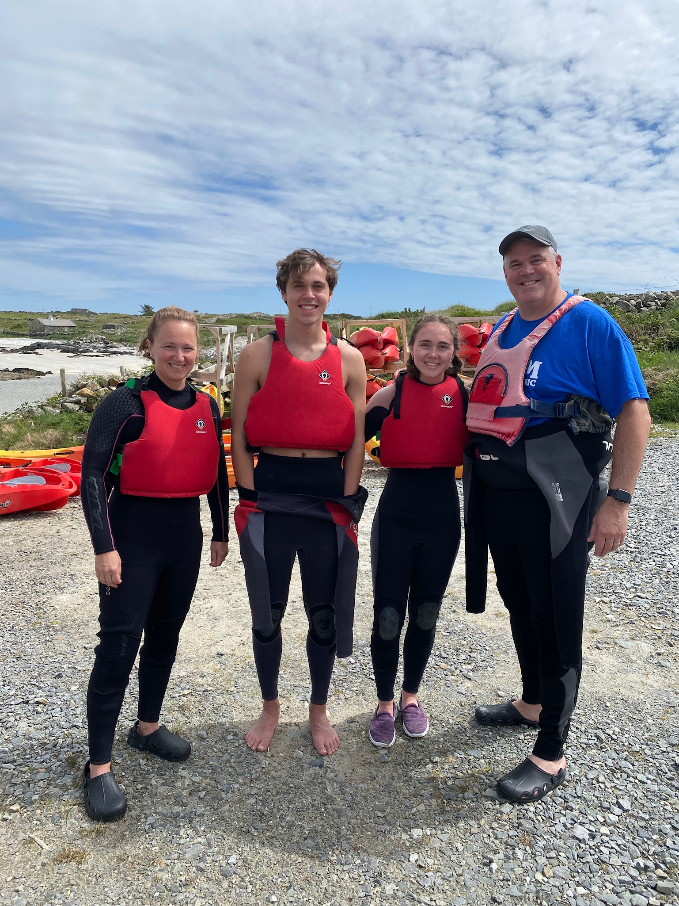
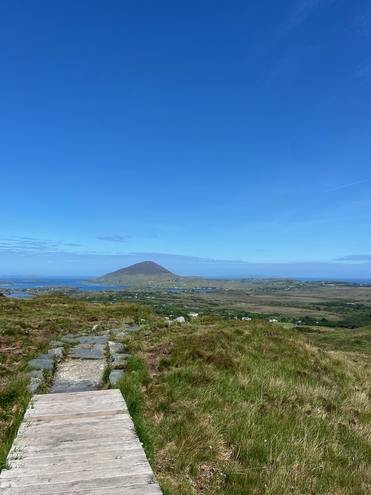
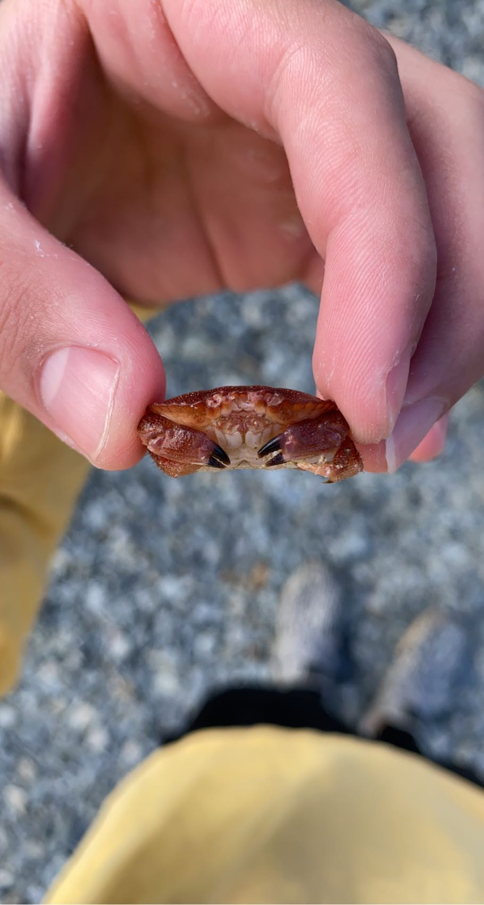
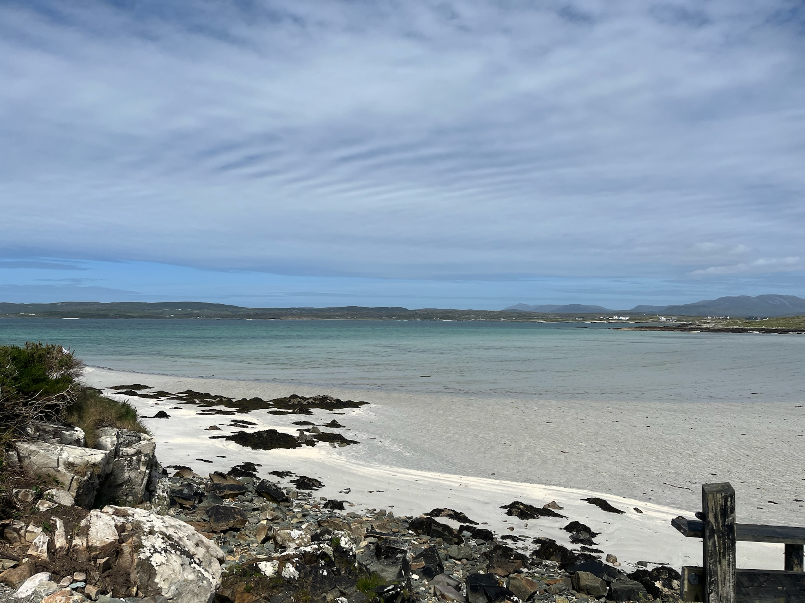
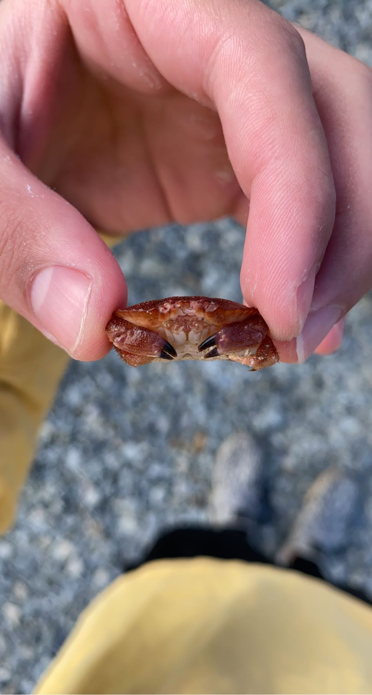
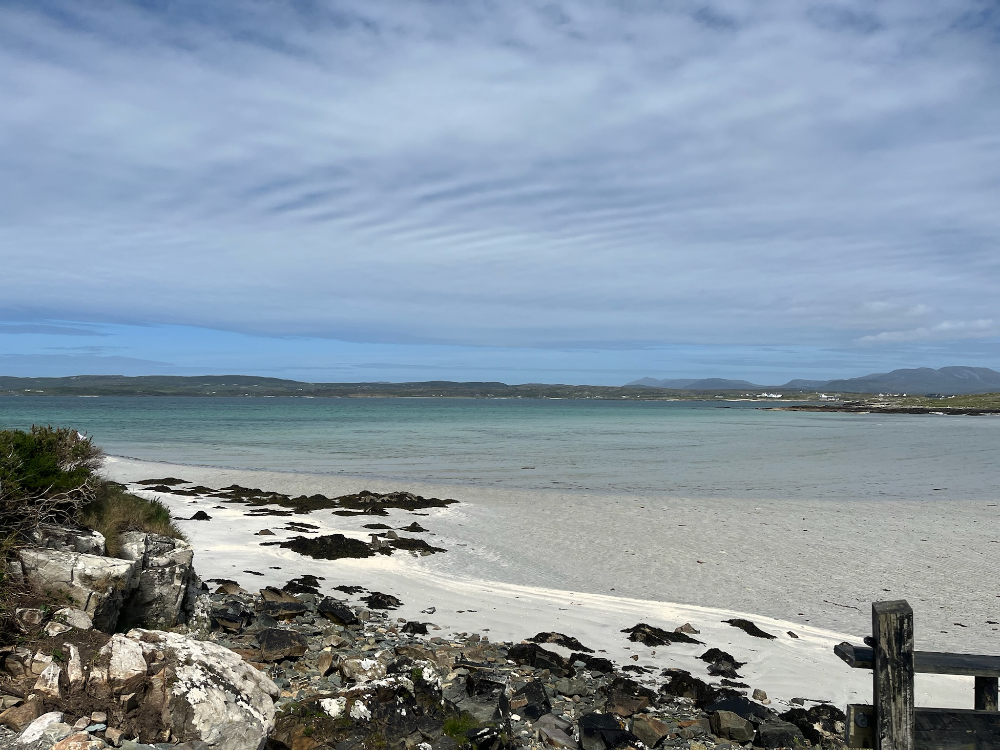

We started day 5 by visiting Connemara National Park and the Twelve Bens mountain range. I don't have much to say about this other than it was breathtakiningly beautiful. Being so high up and seeing sprawling green fields and wild farm animals was amazing. I've never been to a place that made me feel the way Connemara did, so this spot holds a special place in my heart.
After the hike through Connemara, we took a bus ride to Lough Corrib, the coast of Galway, for a guided kayak tour. We saw lots of fish, cool rock formations, and we even learned about the local sea flora. My dad fell off his kayak into the water a few times, and even though we were wearing wetsuits the water was very cold. When we were kayaking I saw a tiny crab floating in the water so I grabbed it because I had never seen such a small crab. After picking it up I realized it was an empty shell (this was the day I learned that crabs molt!). I named it Dermott after our guide at the farm the day prior. Dermott still lives with me to this day.
  


